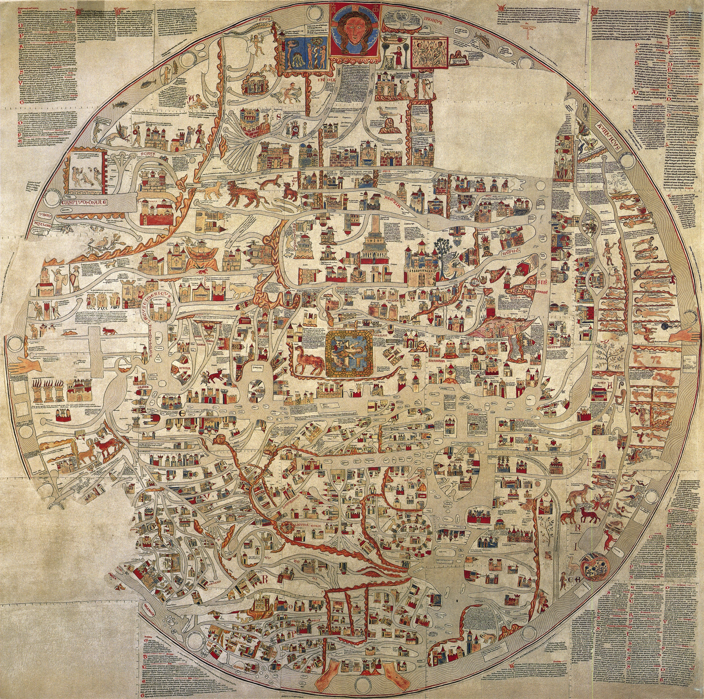

Florilegium res publica Christiana

The Ebstorf Map (c. 1300) — scroll to zoom, drag to move. Image: Wikimedia Commons, public domain.
Florilegium res publica Christiana (FRPC) is a comprehensive compilation of the foundational documents, imperial laws, papal decrees, and patristic writings that built and sustained the intellectual structure of European Christendom: the cumulative legal, moral, and spiritual “bouquet” that defined the Christian international community throughout the Middle Ages. See what the archive holds, where it is going and what has been published.